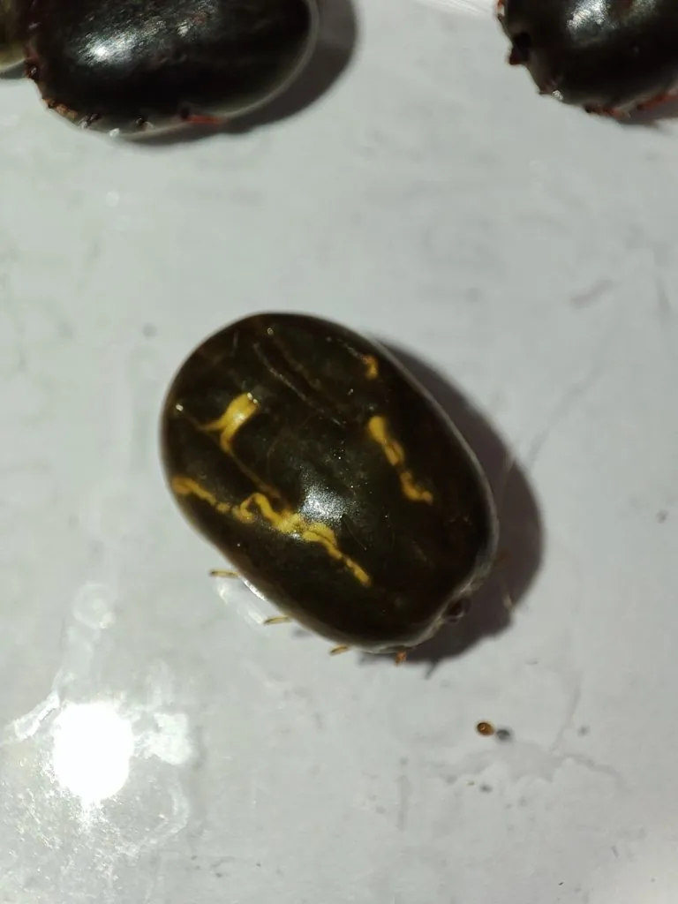

蛛形动物 · 动物界
微小牛蜱 Rhipicephalus microplus

寄生在牛体表的重要蜱类，一生多在同一头牛身上完成，是牛巴贝斯虫病和无形体病的主要传播媒介。
- 分类
- 门节肢动物门纲蛛形纲目蜱目科硬蜱科属扇头蜱属
- 栖息环境
- 热带与亚热带地区的牛、羊等家畜体表及牧场草地
- 地理分布
- 全球热带与亚热带地区，中国南方各省的牛群中常见
- 保护级别
- IUCN 暂无评估；中国未列入国家重点保护名录
物种志
微小牛蜱未吸血时雌蜱体长 2–3 毫米，雄蜱约 1.5–2 毫米，身体扁平呈椭圆形，背面有坚硬的盾板，足末端有爪；吸饱血后雌蜱可胀大到 8–10 毫米，呈灰白色球状。它的一生包括卵、幼蜱、若蜱和成蜱四个阶段，属于“一宿主蜱”，各吸血阶段通常都在同一头牛身上完成。
它广泛分布于热带和亚热带地区，在中国南方各省的牛体上很常见，主要吸食牛、羊等家畜的血液，也会偶尔叮咬其他哺乳动物。雌蜱吸饱血后落地产卵，一次可产 1000–3000 枚卵，在适宜温度下约 3–4 周完成一代，一年可繁殖多代。微小牛蜱是牛巴贝斯虫病和牛无形体病的重要传播媒介，会造成牛贫血、发热、产奶量下降甚至死亡，是畜牧业重点防控的害虫；它一般不主动攻击人类。
形态与习性
- 食性吸食牛、羊等家畜的血液
- 体长未吸血雌蜱 2–3 mm，吸饱血可达 8–10 mm
- 寿命完成一代约 3–4 周，一年可繁殖多代
- 繁殖卵生，雌蜱吸饱血后产卵 1000–3000 枚
- 活动节律温暖季节活跃，依附在牛体上吸血
- 危害传播牛巴贝斯虫病和牛无形体病，是畜牧业害虫
趣味知识
- 微小牛蜱属于“一宿主蜱”，幼蜱、若蜱和成蜱通常都在同一头牛身上吸血。
- 雌蜱吸饱血后体积可膨胀近十倍，变成灰白色的小球。
- 它是牛巴贝斯虫病的主要传播媒介，对养牛业危害很大。